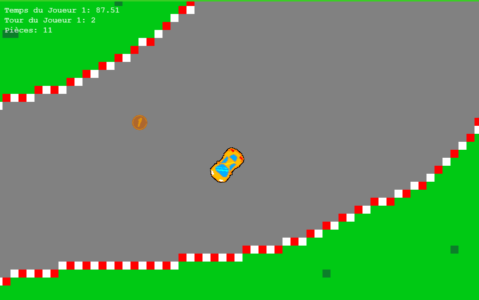
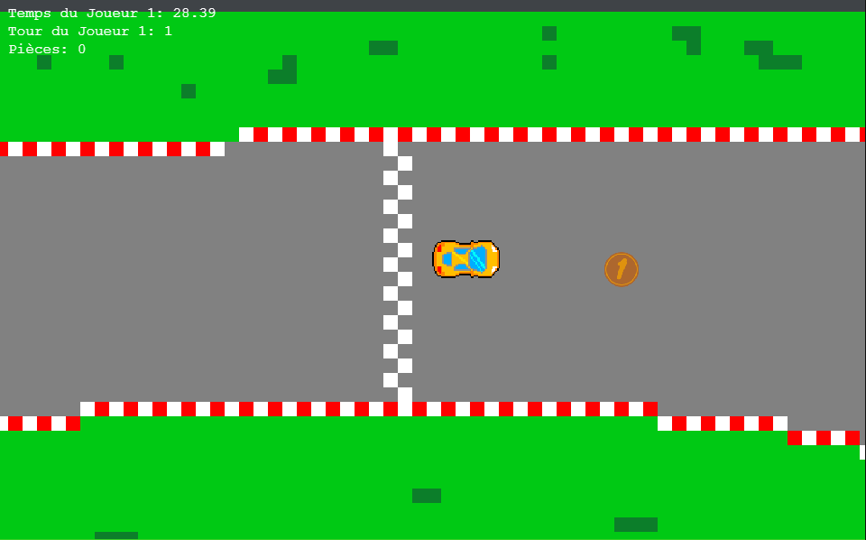
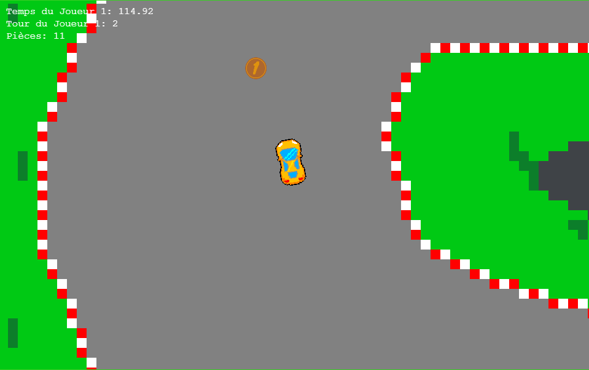
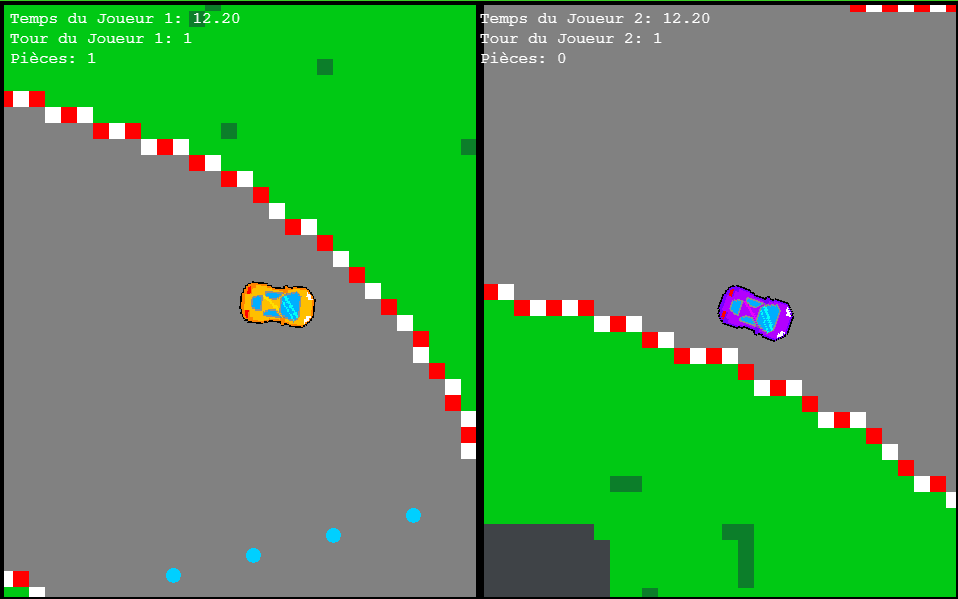
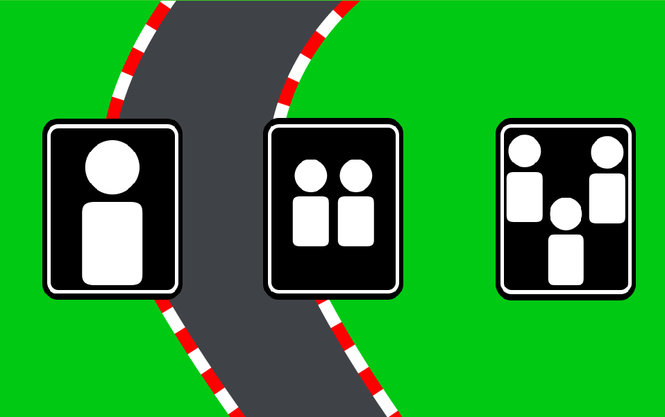

fou de vitesse
description
Fou de vitesse est un jeu de course rétro en vue de dessus (top-down). Jusqu’à trois joueurs s’affrontent sur un circuit rapide et coloré. Le but est de terminer les trois tours le plus vite possible tout en ramassant un maximum de pièces. Le joueur qui combine la meilleure vitesse et le plus de pièces remporte la partie. Fou de vitesse offre une expérience amusante, compétitive et accessible à tous.


galerie




